Cats

- COMMON NAME: Cat
- SCIENTIFIC NAME: Felis catus
- DIET : Carnivore
- TYPE : Mammal
- SIZE : 28 inches
- WEIGHT : 5 to 20 pounds
Cats and Humans
Felis catus or known as cat has had a very long association with human beings. Ancient Egyptians may have domesticated cats for the first time 4,000 years ago. Plentiful mice have probably attracted feral felines to human populations. The willingness of cats to kill them may have first attracted the affectionate interest of humans. Early Egyptians worshiped a cat goddess and also mummified their precious cats on their journey to the next world—along with mummified rats! Later, communities around the world adopted cats as their own companions.
Diet
Domestic cats are predominantly carnivorous and have developed a basic intestine suitable for raw meat. They still retain a rugged tongue that will help them clean the single bit of animal bone (and groom themselves). Their diets, though, differ with the whims of humans and may be complemented by the cat's own hunting achievements.
Like their wild relatives, domestic cats are natural hunters able to stalk prey and pounce with sharp claws and teeth. They are particularly effective at night, when their light-reflecting eyes allow them to see better than much of their prey. Cats also enjoy acute hearing. All cats are nimble and agile, and their long tails aid their outstanding balance.
Cats Behaviors
1. Rubbing
When the kitty rubs his head against you, he does more than simply show you love and say hello. In reality, he's doing something the behaviorist called "bunting." Pheromones are simply being released from his brain, and this is his way of displaying possession of you. Much like a cat would rub on furniture and leave its fragrance to mark its territory-it is proud that you are his.
2. Fit and Sit
Cat's ability to blend "comfortably" into small spaces never fails to amaze or amuse us. Instead, there are a lot of nice places they should relax, including suggesting that you got a cat bed. Then why do they want to curl up in bottles, washbasins, little baskets, etc.?
Small spaces make your cat feel safe and secure. If they were out in the wild, they would not want to be unprotected in an open area because this would make them more susceptible to predators. Felines also have a natural instinct to ambush. By hiding in small tiny spaces they are able to watch and observe their surroundings from a distance.
3. Chattering
You've probably heard your cat's teeth chatter fast and intense—especially when they see a bird as they look out of a window. Behaviorists are speculating that this is because the cat is upset because they can't get outdoors to look for mice. They can even be excited and slightly irritated.
Others suggest that this unusual twitch of the jaw may be your kitty's natural reflex that helps their muscles to brace for the act of killing the prey. Any way, this action is absolutely natural to your cats
Gallery
 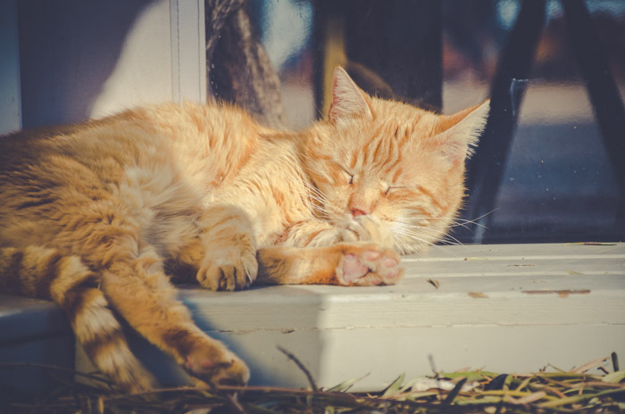
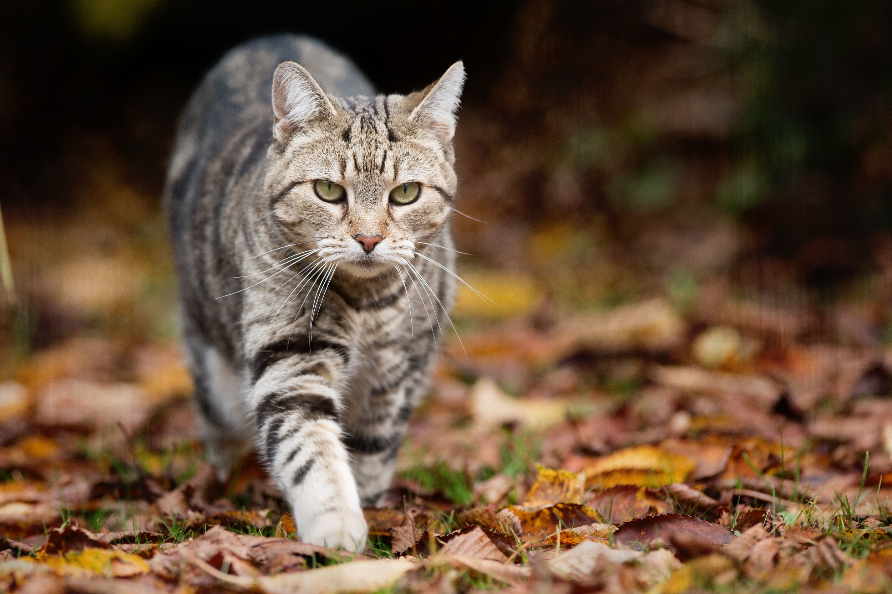
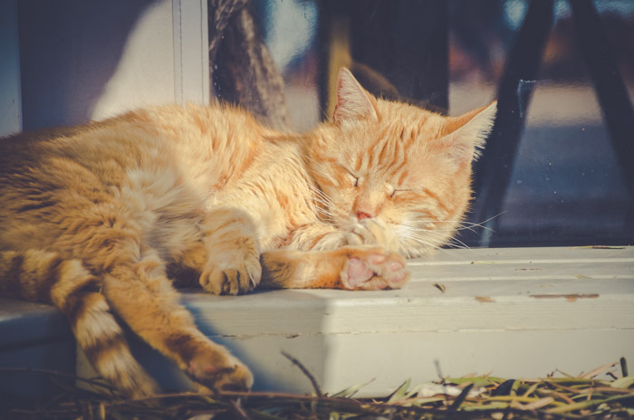
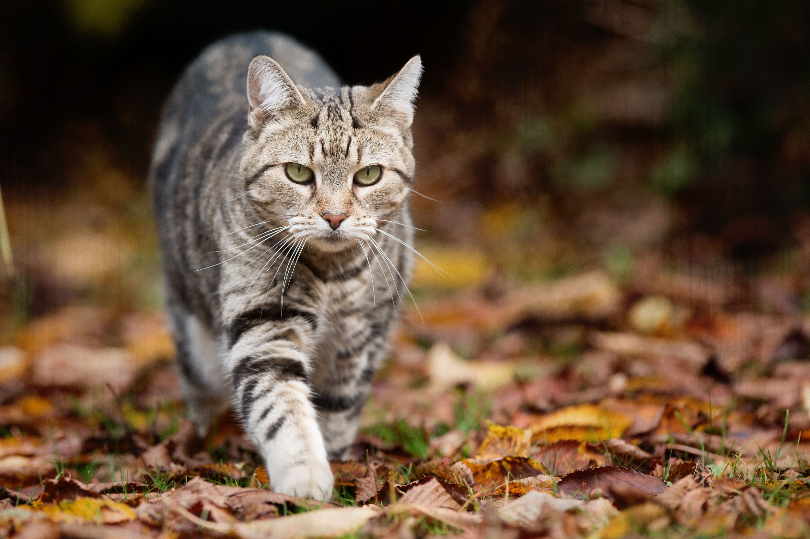
 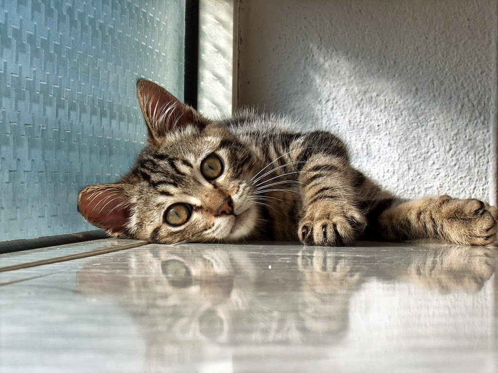
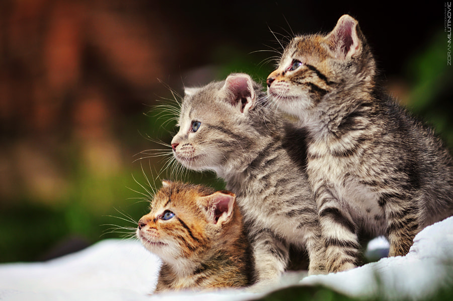
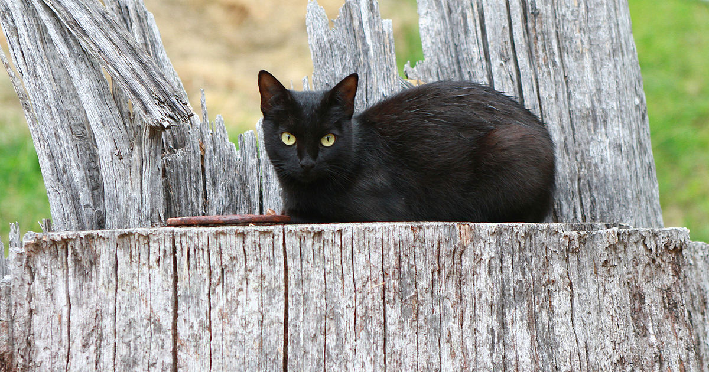
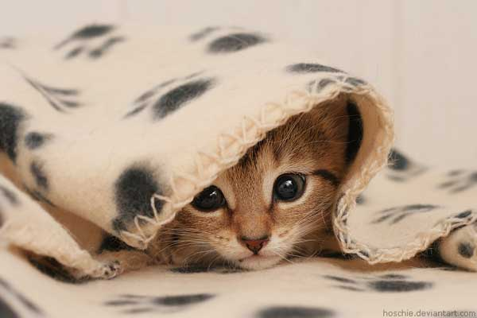
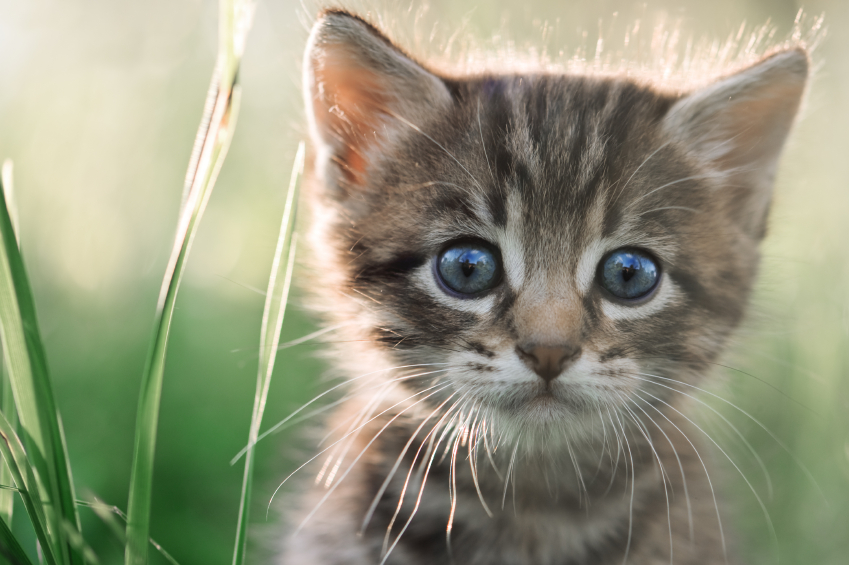
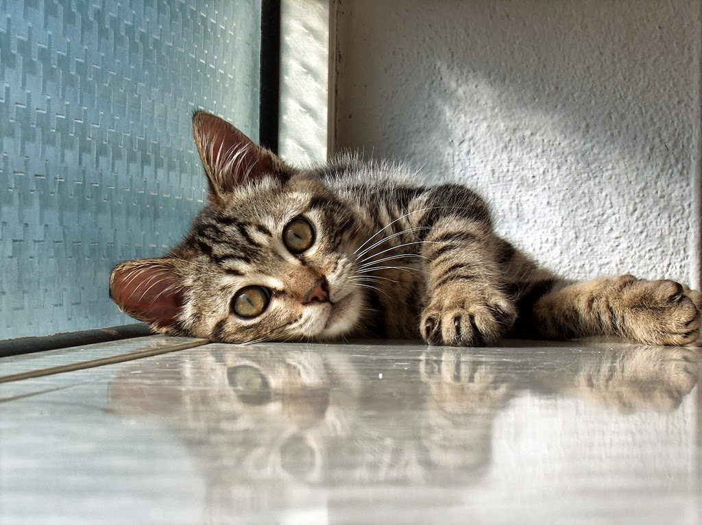
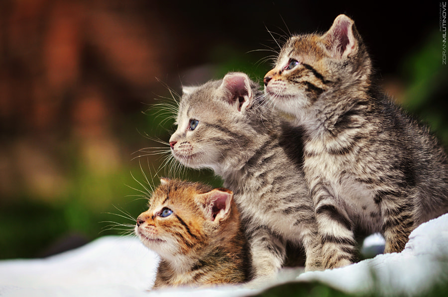
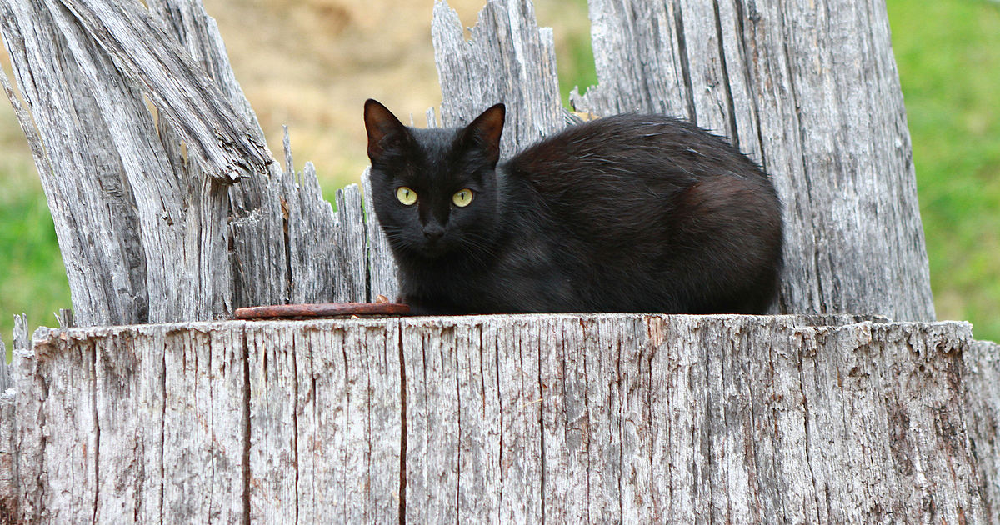
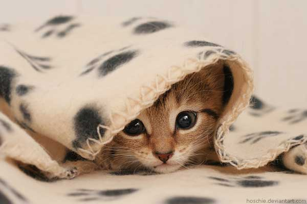
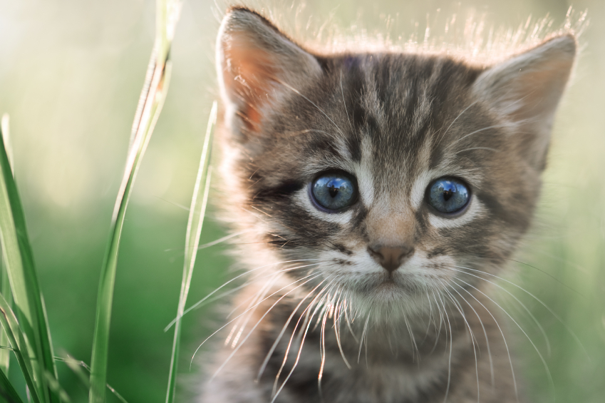
 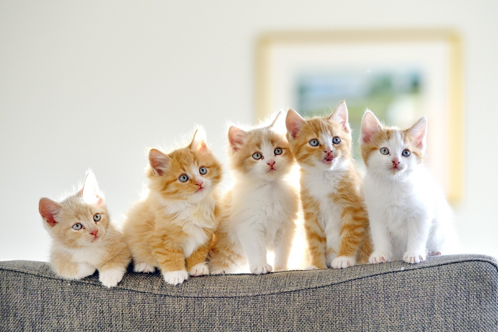
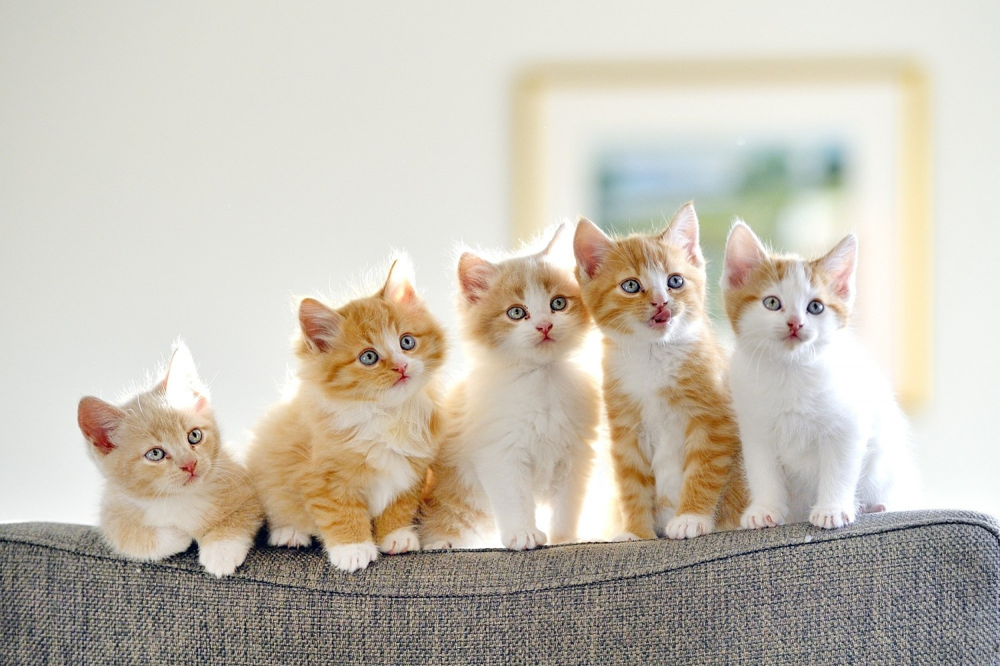